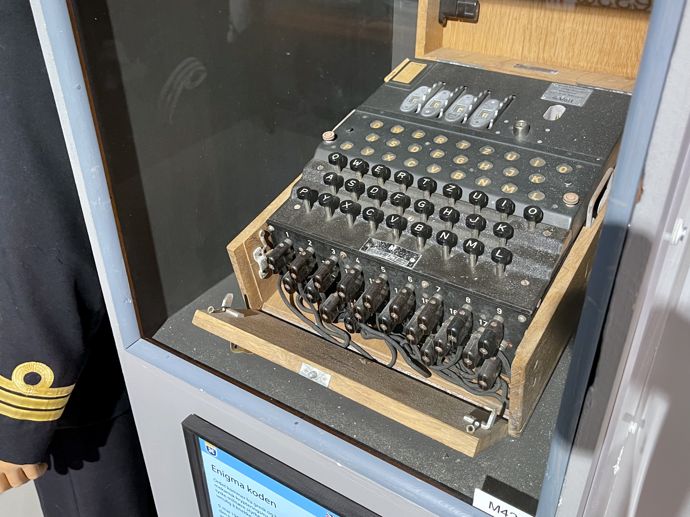

Cut along dashed line to stick neatly into exercise book
KS2 HISTORYTHE HISTORY REVISION HUB • YEAR 5 WORLD WAR II
Name:
Date:
Secret Codebreakers & The Enigma Machine
Key Enquiry Question: How did Alan Turing and the secret minds at Bletchley Park crack the unbreakable German cipher?
LESSON 08 KEY STAGE 2

Source A (Museum Artifact): An Enigma cipher machine showing its alphabetical keyboard, illuminating lampboard, and spinning rotor wheels. (Bletchley Park Trust)
Historical Reading • What this tells us
The German military used an electrical cipher typewriter called the Enigma machine to scramble battle orders. With spinning rotor wheels and plugboard cables, Enigma could scramble a message into 158 million million million combinations.
At secret Bletchley Park in Buckinghamshire, genius mathematician Alan Turing and thousands of young codebreakers designed electromechanical "Bombe" machines that tested combinations at lightning speed, breaking the code daily.
Source B (Archival Photograph): The towering electromechanical Bombe machine in Hut 11, with dozens of spinning coloured drums designed to decipher Enigma keys.
1. Look closely at Source B. Why did Alan Turing realize that only an electromechanical machine (the Bombe) could test thousands of cipher combinations fast enough to save lives?
2. Looking at Source A and Source B, why was the midnight reset of German cipher keys such a desperate daily race against time for codebreakers?
Task 2: Active Chronological Challenge • The Codebreaking Pipeline
Chronological Understanding
STAGE 1Radio Intercept (Y-Stations)
Coastal listening stations intercept Morse code radio signals transmitted by German U-boats and armies.
Why did listening operators need lightning-fast ears to transcribe Morse code dits and dahs?
STAGE 2Hut 8 & The Turing Bombes
Coded slips rushed to Bletchley. Bombes whirr through rotor settings to find the day's secret key.
What went through codebreakers' minds when the machine suddenly stopped on a winning match?
STAGE 3'Ultra' Secret Intelligence
Decrypted battle orders delivered to Churchill in locked yellow dispatch boxes to re-route convoys.
Why was keeping the secret that Britain had cracked Enigma just as critical as breaking the code?
Cut along dashed line to stick neatly into exercise book
Prompt: What mathematical breakthrough convinced you that logic machines could defeat human ciphers and save millions of Allied lives?
2Wren Operating the Bombe in Hut 11
Prompt: What does it feel like to spend 8 hours in deafening mechanical rotor noise knowing your dials might save a convoy at sea tonight?
Task 5: Mission Challenge • Shortening the War
Historian Challenge
Big Question: Historians calculate that Bletchley Park shortened the war by up to two years. How did silent codebreaking in secret wooden huts save millions of civilian and soldier lives?